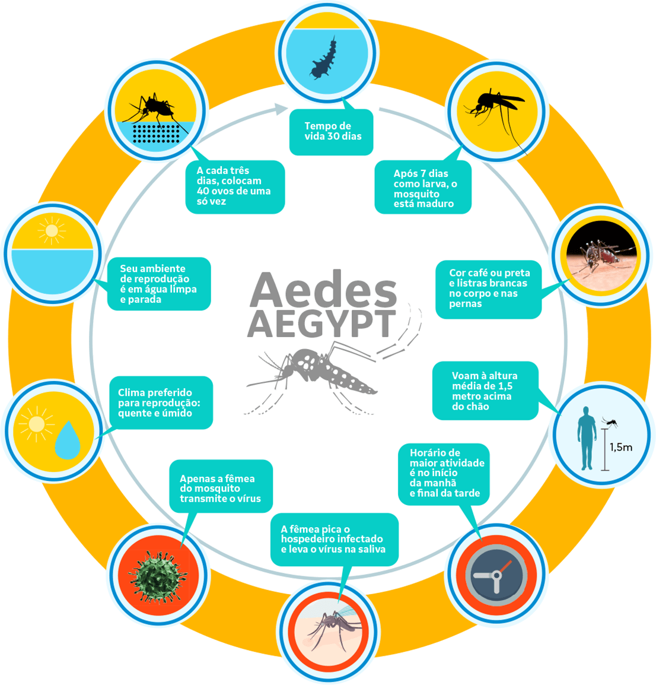

O mosquito transmissor do vírus da dengue, zika e chikungunya é o Aedes aegypti. Ele se caracteriza pelo tamanho pequeno, cor marrom médio e por nítida faixa curva branca de cada lado do toráx. Nas patas, apresenta listras brancas.
O Aedes aegypti vive de 35 a 45 dias, sendo que sua alimentação, reprodução e postura dos ovos ocorre durante o dia. A atividade do mosquito ocorre preferencialmente no início da manhã e final de tarde. Entretanto estudos tem indicado a possibilidade de que este período esteja se ampliando. As fêmeas do mosquito necessitam do sangue humano para a maturação dos ovos. Dessa forma, é nesse momento que pode ocorrer a transmissão das doenças (tanto da transmissão do vírus aos seres humanos, como a infecção do mosquito ao picar uma pessoa doente no período de viremia).
A fêmea deposita até 100 ovos nas paredes internas de recipientes que tenham ou que possam acumular água. A fêmea escolhe mais de um local para realizar cada postura, o que garante maior sucesso reprodutivo, ou seja, podem nascer insetos de vários recipientes no mesmo ambiente. Nesses locais os ovos podem durar até um ano e meio. Em contato com a água, os ovos desenvolvem-se rapidamente em larvas, que dão origem às pupas. Delas, surge o adulto num ciclo de, aproximadamente, 7 dias. Por isso a importância de que cada um observe o seu ambiente ao menos uma vez por semana para eliminar possíveis criadouros do mosquito Aedes aegypti.
